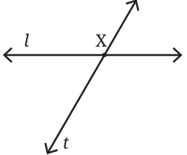
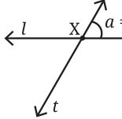
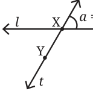
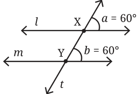
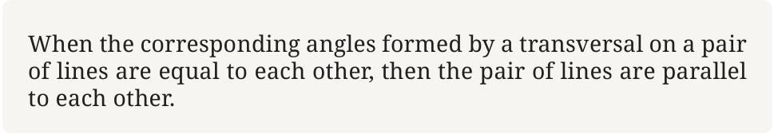
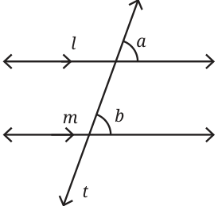
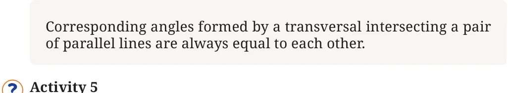
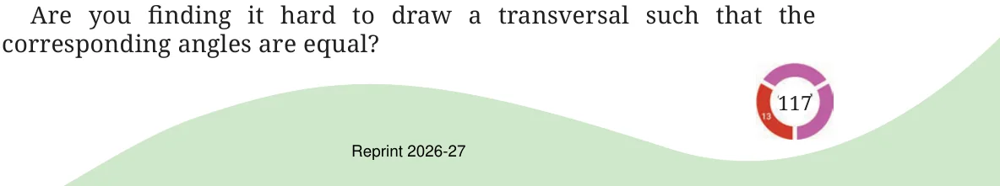
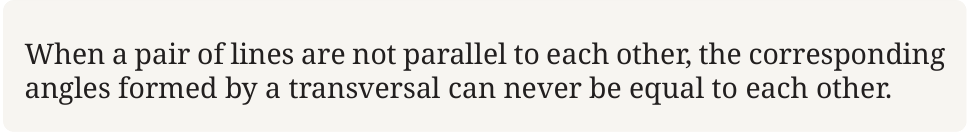

In Fig. 5.14, we notice that the transversal t forms two sets of angles — one with line l and another with line m. There are angles in the first set that correspond to angles in the second set based on their position. \(\angle 1\) and \(\angle 5\) are called corresponding angles. Similarly, \(\angle 2\) and \(\angle 6\), \(\angle 3\) and \(\angle 7\), \(\angle 4\) and \(\angle 8\) are the corresponding angles formed when transversal t intersects lines l and m.
Activity 3
Draw a pair of lines and a transversal such that they form two distinct angles.
Step 1: Draw a line l and a transversal t intersecting it at point X.

Step 2: Measure \(\angle a\) formed by lines l and t (let us say it is 60°).

How many distinct angles have formed now?
If one angle is 60°, the other angle of the linear pair should be 120°. So, we already have two distinct angles.
So, when we draw another line intersecting the transversal t we wish to form only two angles, 60° and 120°.
Step 3: Mark a point Y on line t.

Step 4: Draw a line m through point Y that forms a 60° angle to line t. This can be done either by copying \(\angle a\) with a tracing paper or you can use a protractor to measure the angles.

What do you observe about lines l and m? Do they appear to be parallel to each other?
Yes, they do appear to be parallel to each other.
Angles, \(\angle a\) and \(\angle b\) are corresponding angles formed by the transversal t on lines l and m. These corresponding angles are equal to each other.
From this we can observe:
When the corresponding angles formed by a transversal on a pair of lines are equal to each other, then the pair of lines are parallel to each other.

Suppose, we have a transversal intersecting two parallel lines. What can be said about the corresponding angles?
Activity 4
Fig. 5.19 has a pair of parallel lines l and m (what is the notation used in the figure to indicate they are parallel?). Line t is the transversal across these two lines. \(\angle a\) and \(\angle b\) are corresponding angles. Take a tracing paper and trace \(\angle a\) on it. Now place this tracing paper over \(\angle b\) and see if the angles align exactly. You will observe that the angles match. Check the other corresponding angles in the figure using a protractor. Are all the corresponding angles equal to each other?

Corresponding angles formed by a transversal intersecting a pair of parallel lines are always equal to each other.
Activity 5
In Fig. 5.20, draw a transversal t to the lines l and m such that one pair of corresponding angles is equal. You can measure the angles with a protractor.

Are you finding it hard to draw a transversal such that the corresponding angles are equal?
When a pair of lines are not parallel to each other, the corresponding angles formed by a transversal can never be equal to each other.

